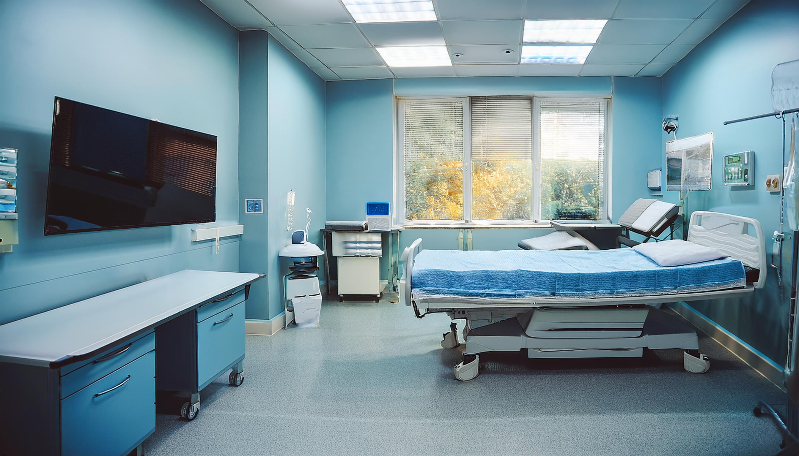

一般内科診療
発熱や悪寒、喉の痛み、頭痛、腹痛などの症状を中心に、一般的な内科・外科の診療を行っています。また、原因不明の不調や慢性症状についても、丁寧な診療に努めております。

地域に根ざした医療
| 月 | 火 | 水 | 木 | 金 | 土 | 日 | |
|---|---|---|---|---|---|---|---|
| 午前9:00-12:00 | ● | ● | ● | ／ | ● | ● | ／ |
| 午後13:00-18:00 | ● | ● | ● | ／ | ● | ／ | ／ |
●＝診療 ／＝休診
- 受付時間：午前 8:00〜11:00 - 午後 12:00〜17:00
- 休診日：木曜・土曜午後・日曜
- ※祝祭日も診療を行っておりますが、休診日もございますので、事前にご確認ください。


こんにちは。
佐藤医院院長、佐藤太郎と申します。当院のホームページをご覧いただき、ありがとうございます。
佐藤医院では、「地域に根ざした医療」をモットーに、地域の皆さまに安心して通っていただける医院を目指し、日々の診療に取り組んでおります。
日常よくある体調不良から生活習慣病まで、幅広い症状やお悩みに対応しています。患者さまのお話を丁寧に伺い、できるだけ分かりやすい言葉でご説明することを心がけています。
私たちは、病気や不安を少しでも軽減し、安心して診療を受けていただけるよう、スタッフ一同心を込めて対応しております。
また、必要な医療機関と連携し、必要に応じてより専門的な診療へつなげるなど、地域におけるかかりつけ医としての役割を大切にしています。
これからも、地域のみなさま一人ひとりに寄り添い、安心して頼っていただける医院を目指してまいります。どうぞよろしくお願いいたします。
佐藤医院 院長 佐藤 太郎
発熱や悪寒、喉の痛み、頭痛、腹痛などの症状を中心に、一般的な内科・外科の診療を行っています。また、原因不明の不調や慢性症状についても、丁寧な診療に努めております。
高血圧症、糖尿病、脂質異常症（高コレステロール血症）、メタボリック症候群など、生活習慣に関わる症状を診療します。病気の進行を予防し、健康維持のための生活指導や薬物療法を行います。


胃痛、胃もたれ、胸やけ、便秘、下痢などの消化器系の不調に対応しています。必要に応じて胃カメラや各種検査などを実施し、早期の発見をサポートします。
咳、息切れ、胸の痛みなど、呼吸器系の症状について診療を行っています。長引く咳や喘息、慢性閉塞性肺疾患（COPD）などにも対応し、適切な治療をご案内します。

佐藤医院は、地域の皆さまの健康を守り、より良い生活をサポートする身近な医療機関として診療を行っています。
急な体調不良、生活習慣病に関するご相談、健康診断など、さまざまなお悩みに対応し、安心して受診いただける環境づくりを大切にしています。
これからも、地域の皆さまに信頼される医院を目指してまいります。


ご来院の際は、交通状況にご注意ください。最寄駅から徒歩5分の便利な立地です。
| 月 | 火 | 水 | 木 | 金 | 土 | 日 | |
|---|---|---|---|---|---|---|---|
| 午前9:00-12:00 | ● | ● | ● | ／ | ● | ● | ／ |
| 午後13:00-18:00 | ● | ● | ● | ／ | ● | ／ | ／ |
●＝診療 ／＝休診
- 受付時間：午前 8:00〜11:00 - 午後 12:00〜17:00
- 休診日：木曜・土曜午後・日曜
- ※祝祭日も診療を行っておりますが、休診日もございますので、事前にご確認ください。
その他、ご不明点があればお電話またはメールでお問い合わせください。